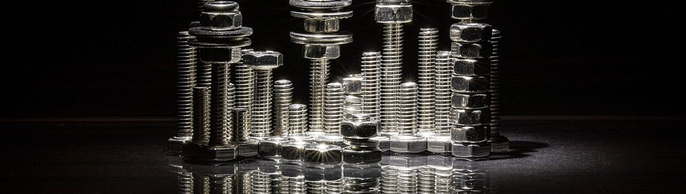
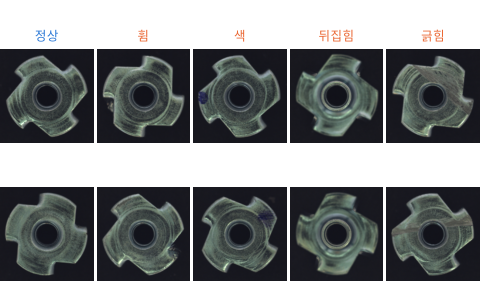

사진: Dietmar Rabich · CC BY-SA 4.0MVTec Software GmbH 가 공개한 공장 부품 · 표면 15종의 이상 탐지 데이터 중 금속 너트 (Bergmann et al., CVPR 2019). Hugging Face 사본 (TheoM55/mvtec_all_objects_split) 에서 받는다. 라이선스 CC BY-NC-SA 4.0 (비상업 용도만)

| split | defect | label | mean_brightness |
|---|---|---|---|
| train | good | 0 | 60.8 |
| train | good | 0 | 60.2 |
| train | good | 0 | 62.4 |
| test | color | 1 | 53.9 |
| train | good | 0 | 54.5 |
| test | flip | 1 | 57.1 |
| 열 | 종류 | 빈칸 | 고유값 수 | 범위 · 대표값 |
|---|---|---|---|---|
| split | 글자 · 범주 | 0 | 2 | 가장 흔한 값: train (65.7%) |
| defect | 글자 · 범주 | 0 | 5 | 가장 흔한 값: good (72.2%) |
| label | 숫자 | 0 | 2 | 0 ~ 1 (평균 0.2776) |
| mean_brightness | 숫자 | 0 | 132 | 51.2 ~ 69.5 (평균 58.65) |
학습에는 정상 사진만 있다. 불량은 시험에서 처음 본다
1 = 불량을 모두 정상보다 높게, 0.5 = 동전 던지기
| ① 한 행 | 부품 사진 한 장 |
| ② 입력 X | 사진 (학습에는 정상 사진만) |
| ③ 출력 y | 이상 점수 (높을수록 불량 같음) → 기준을 넘으면 불량 |
| ④ 평가지표 | ROC-AUC, '불량 95% 를 잡을 때 정상을 몇 % 버리나' |
| ⑤ 기준선 | 무작위 점수 (AUC 0.5) · 픽셀 그대로 비교 |
문제를 정할 때 처음 채워 보는 칸들입니다. 여기서 끝이 아니라, 시험 데이터를 어떻게 나눌지 · 틀렸을 때 손해가 얼마인지 · 예측 시점에 정말 알 수 있는 값인지 같은 칸을 더 붙일수록 좋은 문제가 됩니다.
random score (500 draws) AUC 0.501 good parts rejected at 95% recall 94%
pixels + PCA reconstruction AUC 0.586 good parts rejected at 95% recall 77% AUC per defect {'bent': 0.45, 'color': 0.46, 'flip': 1.0, 'scratch': 0.43}
ResNet-18 features + 3-NN AUC 0.838 good parts rejected at 95% recall 73% AUC per defect {'bent': 0.77, 'color': 0.71, 'flip': 1.0, 'scratch': 0.87}누가, 왜, 어떻게 만든 데이터인지 직접 확인해 보세요.
프로젝트 주제를 고를 때 참고하세요 (일반적인 예시).